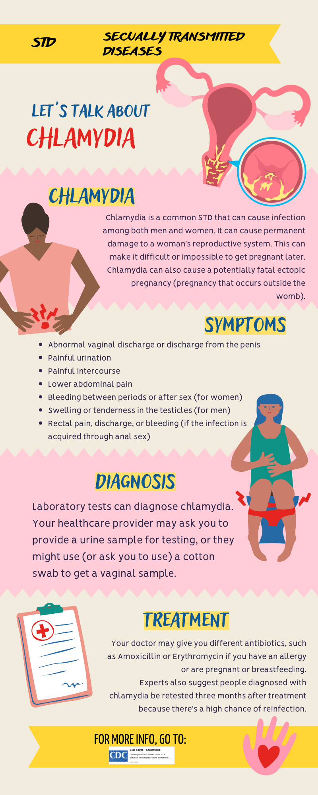

CHLAMYDIA

Chlamydia is a common, but treatable, STD. If left untreated, chlamydia can make it difficult for a woman to get pregnant. Chlamydia, the most prevalent bacterial STI in the United States, is the result of the Chlamydia trachomatis bacterium, which can infect the urethra (bladder opening) and cervix (uterus opening). It is common in youngsters aged fifteen to nineteen. The disease is easily treated, but like other sexually transmitted infections, chlamydia tends to be silent and therefore go undiagnosed until it becomes more serious than in its early stages. Three in four women and one in two men have no symptoms. In 40 percent of cases, by the time a girl seeks medical attention, the disease has progressed to pelvic inflammatory disease (PID, described below), a major cause of female infertility and pelvic pain.

Causes
The Chlamydia trachomatis bacterium is most commonly spread through vaginal, oral and anal sex. It's also possible for pregnant women to spread chlamydia to their children during delivery, causing pneumonia or a serious eye infection in the newborns.
Genital warts spread through:
Signs and Symptoms
1. Abnormal vaginal discharge or discharge from the penis
2. Painful urination
3. Painful intercourse
4. Lower abdominal pain
5. Bleeding between periods or after sex (for women)
6. Swelling or tenderness in the testicles (for men)
7. Rectal pain, discharge, or bleeding (if the infection is acquired through anal sex)
Note: Symptoms may not appear until several weeks after exposure to the infection, and some people may not experience any symptoms at all.
Complications
• Pelvic inflammatory disease (PID) - PID is an infection of the uterus and fallopian tubes that causes pelvic pain and fever.PID can damage the fallopian tubes, ovaries and uterus, including the cervix.
• Infection near the testicles (epididymitis) - A chlamydia infection can inflame the coiled tube located beside each testicle (epididymis). The infection can result in fever, scrotal pain and swelling.
• Prostate gland infection - Rarely, the chlamydia organism can spread to the prostate gland. Prostatitis can cause pain during or after sex, fever and chills, painful urination, and lower back pain.
• Infections in newborns - The chlamydia infection can pass from the vaginal canal to your child during delivery, causing pneumonia or a serious eye infection.
• Ectopic pregnancy - This occurs when a fertilized egg implants and grows outside of the uterus, usually in a fallopian tube. The pregnancy needs to be removed to prevent life-threatening complications, such as a burst tube. A chlamydia infection increases this risk.
• Infertility - Chlamydia infections — even those that produce no signs or symptoms — can cause scarring and obstruction in the fallopian tubes, which might make women infertile.
• Reactive arthritis - People who have Chlamydia trachomatis are at higher risk of developing reactive arthritis, also known as Reiter syndrome. This condition typically affects the joints, eyes and urethra — the tube that carries urine from your bladder to outside of your body.
Prevention
Although the precise cause of schizophrenia isn't known, certain factors seem to increase the risk of developing or triggering schizophrenia, including:
• Use condom
• Use dental dam
• Avoid douching
• Skip spermicide
• Clean sex toys
• Know what symptoms to look for
• Get STI screenings regularly
• Talk with sexual partner about sex life